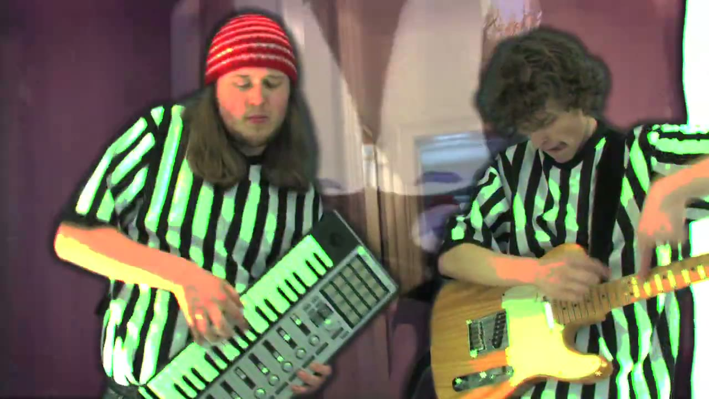
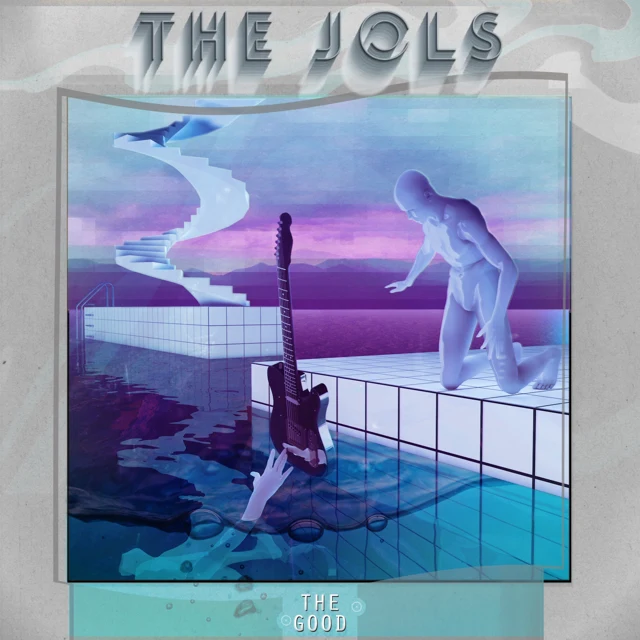

Featured video · The Jols
Good One
I wrote, produced, mixed, and mastered the track and made the video.
Watch on YouTubeStephen Jolley
I specialize in Logic Pro for music production, editing, mixing, and mastering. I also work in Pro Tools and REAPER. These are solo releases, collaborations, and videos I made or edited.
Featured video · The Jols
I wrote, produced, mixed, and mastered the track and made the video.
Watch on YouTube
Music video · Dutch Lust
I co-wrote and produced the track, played synths and guitar, and mixed and mastered it. I also performed in and edited the video.
Watch on YouTube
Solo album · The Jols
I wrote, performed, produced, mixed, and mastered this album.
Listen on BandcampI wrote, produced, mixed, and mastered both tracks and made their videos.
I made these videos and wrote, produced, mixed, and mastered the music.
I played guitar, co-composed, and produced on both releases.